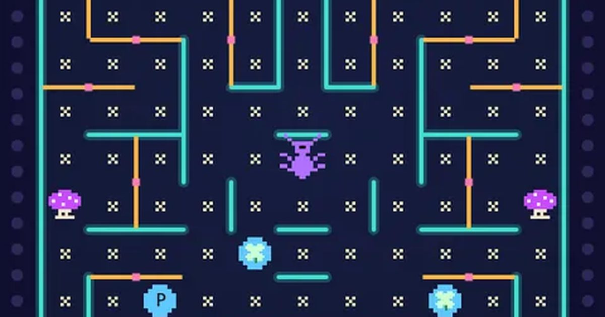

무당벌레 오락실
Bug Arcade
오락실 · 미로무료설치 없음폰 · PC
▶ 지금 바로 하기로그인 없이 브라우저에서 바로 시작돼요
어떤 게임인가요?
밤 정원의 네온 도트 미로. 판마다 새 미로, 반딧불 시계가 한 바퀴 돌 때마다 곤충이 나와요. 쪽문으로 길을 막고, 색이 바뀌는 글자로 BREAK · POCKET을 완성하세요.
목표 · 곤충을 피해 꽃 · 클로버 · 글자를 모두 먹으면 다음 ROUND로 넘어갑니다.
게임 방법
- 미로는 판마다 새로 만들어져요(좌우 대칭 · 쪽문 20개). 토리는 아래 가운데에서 출발합니다.
- 쪽문은 토리만 밀고 지나갈 수 있고, 지나가면 90° 돌아가 길이 바뀝니다. 곤충에게는 벽이에요.
- 테두리의 반딧불이 한 바퀴 켜질 때마다(다음 바퀴엔 꺼질 때마다) 가운데에서 곤충이 1마리씩 나옵니다 (최대 4마리).
- 클로버와 글자는 평소 파란색이고 약 10초마다 빨강(아주 잠깐) → 노랑으로 바뀝니다. 파랑 100 · 노랑 300 · 빨강 800점 × 배율.
- 파란 클로버를 먹으면 이번 ROUND 배율이 ×2 → ×3 → ×5로 올라요.
- 빨간 글자는 POCKET(완성 시 +10,000), 노란 글자는 BREAK(완성 시 목숨 +1)에 켜집니다.
- 4번째 곤충이 나오면 가운데에 과일이 나옵니다. 먹으면 700점(ROUND마다 +400, 최대 7,500)과 함께 곤충이 잠시 멈춰요. 멈춰도 닿으면 위험.
- 독버섯은 토리도 곤충도 밟으면 끝(곤충은 가운데로 돌아감).
- ROUND마다 곤충 종류(솜털 방울이 · 사슴벌레 · 거미 · 애벌레)가 바뀌어요.
등장하는 것들
- 꽃 · 10점 × 배율
- 파란 클로버 · 100점 · 배율 ↑
- 빨간 글자 · 800점 · POCKET
- 노란 글자 · 300점 · BREAK
- 반딧불 시계 · 한 바퀴 = 곤충 1마리
- 과일 18종 · 700 ~ 7,500 · 곤충 정지
- 독버섯 · 판이 갈수록 늘어요
- 곤충 4종 · ROUND마다 바뀜
공략 팁
- 빨강은 아주 잠깐이에요. 파란색 → 빨강으로 바뀌는 순간을 글자 바로 옆에서 기다리세요.
- 곤충이 나오기 직전 경고음이 울려요. 가운데 근처에서 멀어지세요.
- 곤충은 평소엔 이리저리 헤매다가, 시간이 지나면 한 마리씩 몇 초 동안 곧장 쫓아와요.
- 쫓아오는 곤충 앞에서 쪽문을 지나가면 문이 돌아가 길이 막혀요.
- 독버섯 근처로 곤충을 유인하면 곤충이 독버섯을 밟고 돌아갑니다.
- 배율을 먼저 ×5로 올린 뒤 꽃과 글자를 먹으면 점수가 크게 뛰어요.
 성 지키기
성 지키기 통통 배구
통통 배구 과일 베기
과일 베기 지뢰찾기
지뢰찾기 십장생 짝맞추기
십장생 짝맞추기 제기차기
제기차기